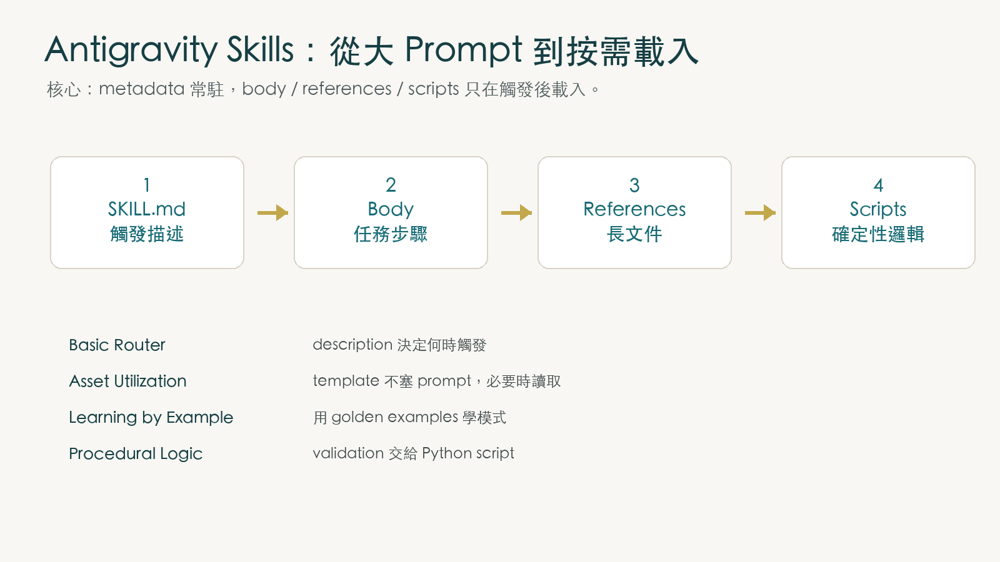

很多團隊第一次做 coding agent，最自然的做法是把所有規則都塞進 system prompt：commit message 怎麼寫、license header 怎麼加、JSON 要怎麼轉型、資料庫 schema 有哪些禁忌。短期看起來很快，長期會變成一個越來越沉的 prompt 倉庫。
Google 的 Antigravity Skills Codelab 要你改掉這個習慣。它把 Day 3 白皮書的核心概念放進實作：不要讓模型永遠背著所有流程，而是把流程整理成 skills，讓代理人在真正需要時才載入。

當 Prompt 變成倉庫，模型會開始失焦
Codelab 一開始先指出兩個痛點：Context Saturation 和 Tool Bloat。代理人可以讀檔、呼叫工具、接 MCP server，但如果你一開始就把整個 codebase、所有工具說明、所有公司規則都塞進 active context，模型不會因此變成全知，它只會被無關資訊稀釋注意力。
Agent Skill 的解法是 progressive disclosure。模型先只看到一份很薄的目錄：每個 skill 的名稱與 description。等使用者意圖真的符合某個 skill 時，再把該 skill 的完整指令、references 或 scripts 載進來。
這就是 Day 3 反覆強調的重點：讓 context 保持瘦身，不是為了省 token 而已，而是為了讓代理人保持判斷清晰。

Skill 其實是一個小型軟體套件
Antigravity 裡的 skill 是一個資料夾。最小形式只有 SKILL.md，但真正有用的 skill 通常會把 deterministic work、長文件與範本分開。
my-skill/
├── SKILL.md
├── scripts/
│ ├── run.py
│ └── util.sh
├── references/
│ └── api-docs.md
└── assets/
└── template.mdSKILL.md 的 frontmatter 是觸發介面，description 必須清楚到模型能判斷何時該用、何時不該用。Markdown body 則是執行指令，包含目標、步驟、範例與限制。scripts 負責不要交給模型猜的工作，例如 schema validation、格式轉換、固定規則檢查。
這個結構讓 skill 比 prompt 更接近工程資產：可以進版控，可以 code review，可以拆責任邊界，也可以搬到不同專案或全域環境使用。
四個範例，其實是在教四種 authoring pattern
Codelab 不是只讓你照抄四個 skills，而是在示範四種封裝代理人能力的方法。
Basic Router
git-commit-formatter 只靠 SKILL.md 指令，把 lazy commit message 改成 Conventional Commits。重點是 description 要能精準觸發。
Static Reference
license-header-adder 把長 license template 放到 resources。法律文字不該每次進 prompt，也不該讓模型自由改寫。
Few-Shot Example
json-to-pydantic 用 input/output golden examples 教模型模式。很多結構化轉換，範例比五十條文字規則更可靠。
Script Delegation
database-schema-validator 把判斷交給 Python script。安全規則、命名規範、禁止語句這類檢查，應由程式保證。
這四種 pattern 串起來，就是從「提示詞」走向「可維護 skill library」的路線圖。越是重要、越容易出錯、越需要一致性的任務，就越應該從純文字指令升級成 references、examples 或 scripts。

Agents CLI Skills 把生命週期變成可呼叫能力
Codelab 最後把視角拉到 Agents CLI Skills。開發 AI agent 有很多重複工作：scaffold 專案、安裝依賴、跑 lint、啟動 playground、測試 prompt、部署。若每次都讓 coding assistant 猜專案結構，品質會飄。
uvx google-agents-cli setup 安裝的是一套生命週期工具，也註冊一組 domain-specific skills。這些 skills 讓 Antigravity 不只會「幫你寫程式」，還知道如何用標準路徑建立、測試、評估與部署 agent。
uvx google-agents-cli setup
agents-cli create weather-assistant --prototype --yes
cd weather-assistant
agents-cli install
agents-cli run "How are you?"
agents-cli playground這裡的深層意義是：skills 可以封裝的不只是單一任務，也可以封裝整個開發生命週期。當 scaffold、lint、test、playground 變成穩定能力，agent 開發就不再靠一次次手工拼湊。
npx skills：open skill ecosystem 的安裝層
官方 Codelab 最後還介紹 npx skills：這是 Vercel Labs 開發的 skills 套件管理工具，可把技能安裝到 ~/.agents/skills，供 Antigravity、Claude Code、GitHub Copilot、Cursor、Cline 等代理人工具使用。
這一段補上了 Skills 的另一個重點：skill 不只是單一 IDE 的個人設定，而是逐漸形成可散布、可安裝、可審查的 open agent skills ecosystem。也因此第三方 skill 應像軟體依賴一樣審查來源、版本與 scripts。

uvx google-agents-cli setup 後，Antigravity 確認已識別並載入可用 Skills 的清單——展示 Agents CLI Skills 的生命週期整合效果。官方 Codelab 步驟對照
上面的文章是導讀，不是逐步操作手冊；為了避免漏掉官方流程，以下把官方 Codelab 的 9 個 step 全部對齊列出。
- Introduction：介紹 Google Antigravity 與 Agent Skills，前置條件是已安裝並設定 Antigravity。
- Why Skills：說明 context saturation、tool bloat，以及 Agent Skills 如何用 progressive disclosure 解決。
- Agent Skills and Antigravity：定義 Antigravity 裡的 skill，並和 tools、rules、workflows 做定位比較。
- Creating Skills：說明目錄結構、
SKILL.mdfrontmatter / body，以及 scripts integration。 - Authoring Skills：實作四個層級的 skill：
git-commit-formatter、license-header-adder、json-to-pydantic、database-schema-validator。 - The Developer Toolkit：安裝 Agents CLI Skills，並走過 scaffold、local test query、interactive web playground。
- Installing Agent Skills using npx skills：介紹
npx skills與~/.agents/skills安裝位置。 - Congratulations：總結已完成 skill 建立、設定與全域 / 專案 scope 的自訂能力。
- Reference docs：列出 Antigravity 官方網站、文件、下載與相關 Codelab。
來源：Google Codelab「Authoring Google Antigravity Skills」
codelabs.developers.google.com/getting-started-with-antigravity-skills